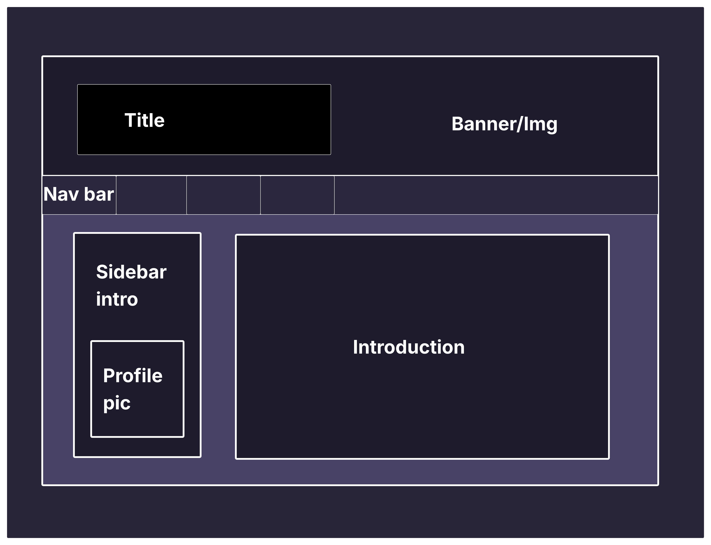
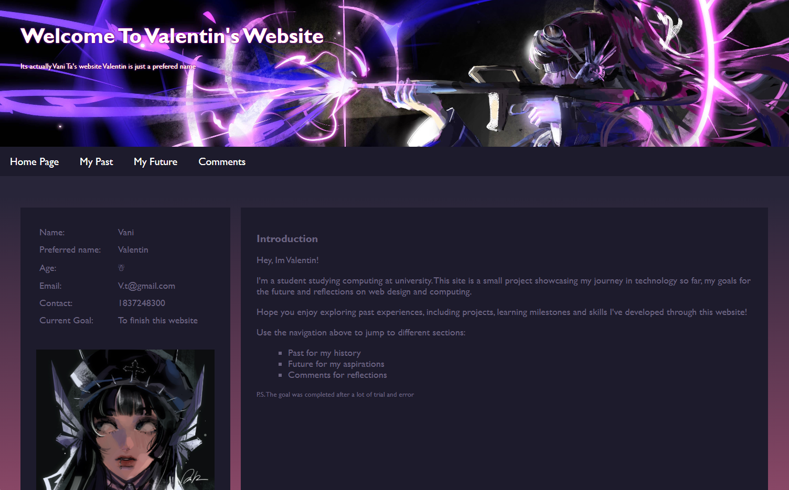
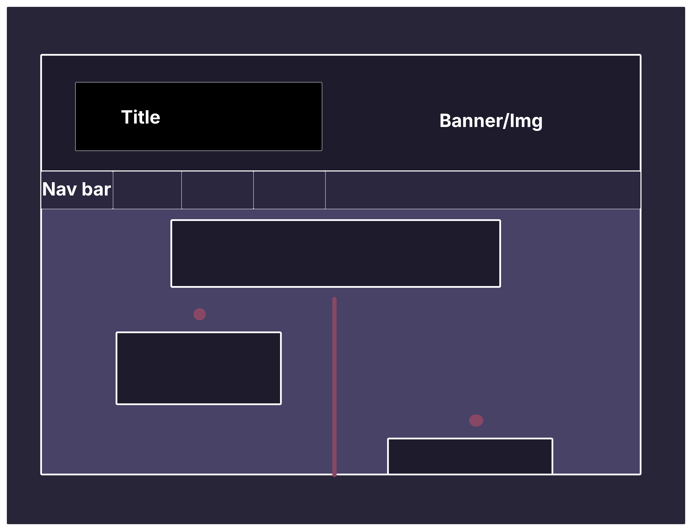
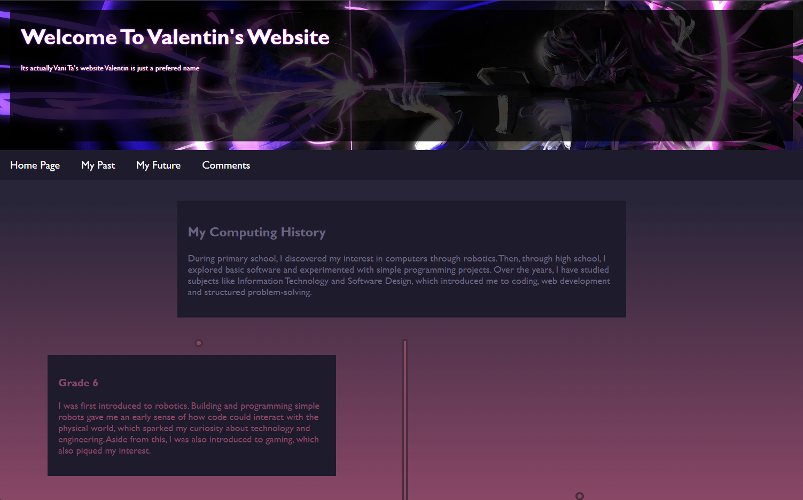
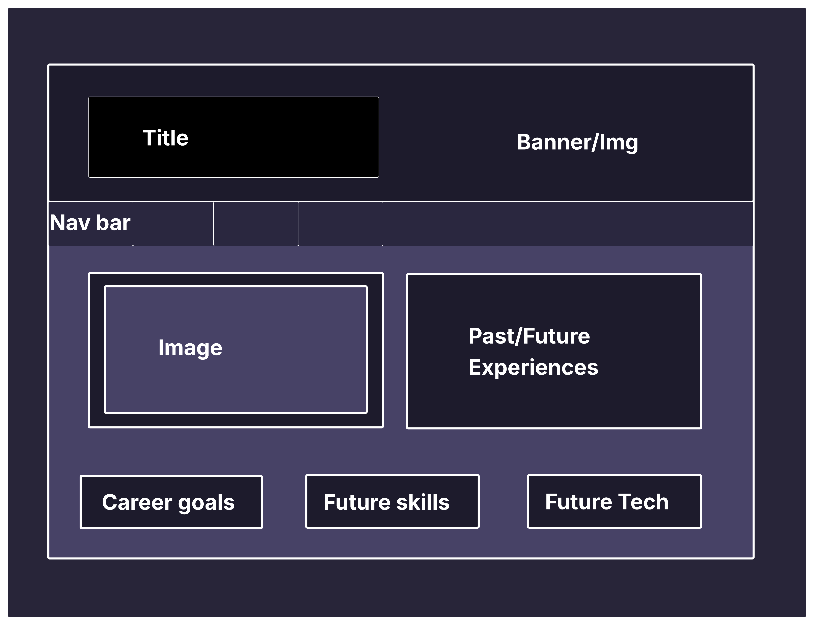
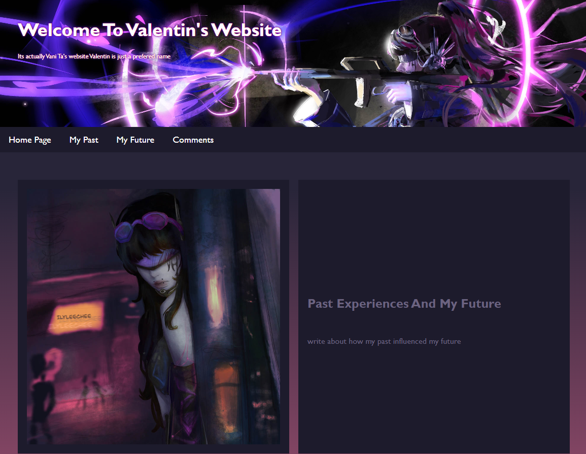
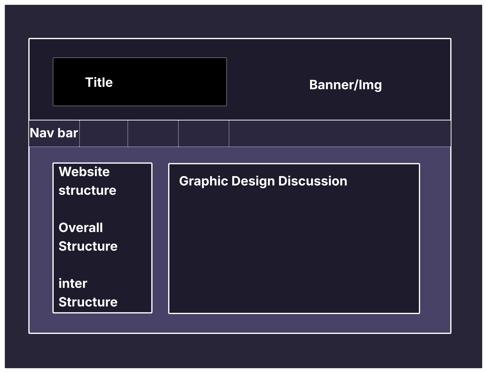
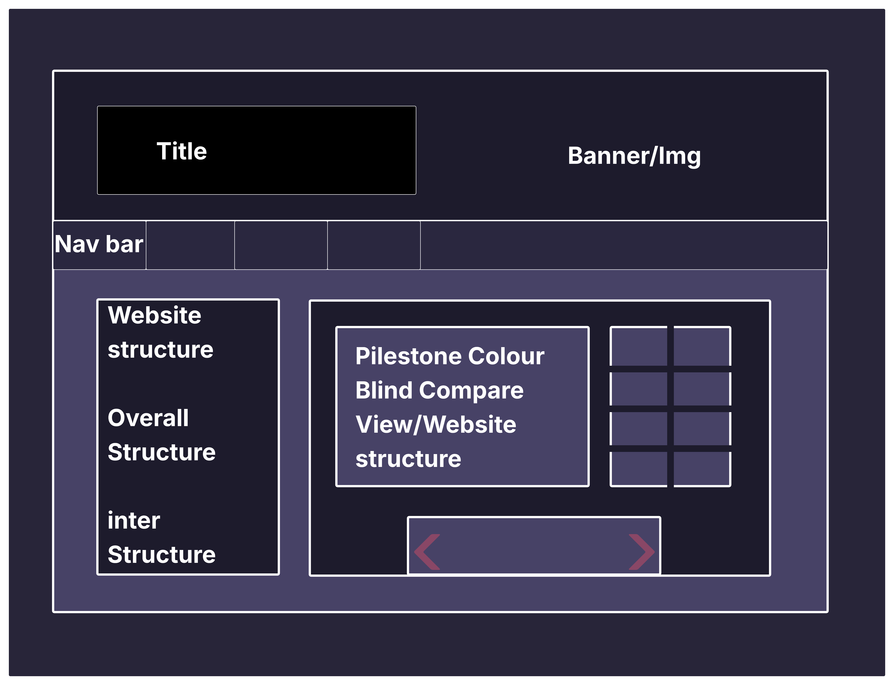
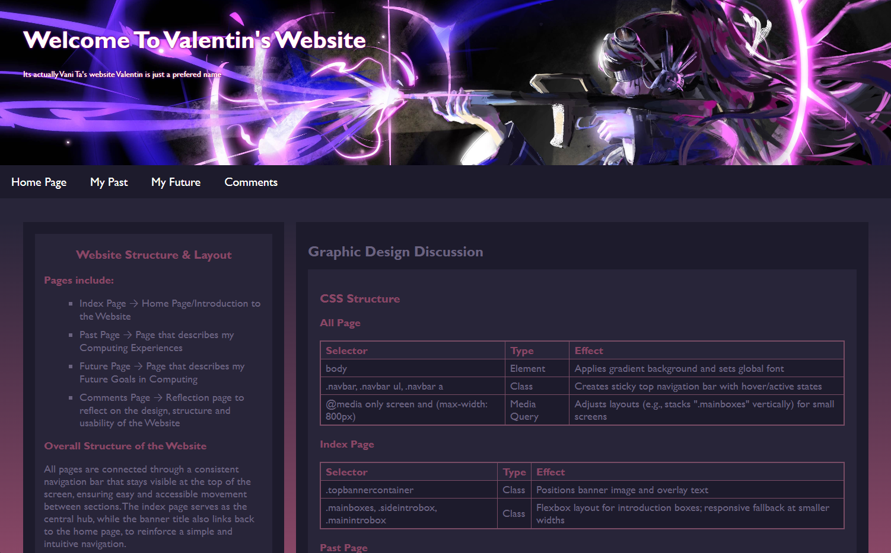
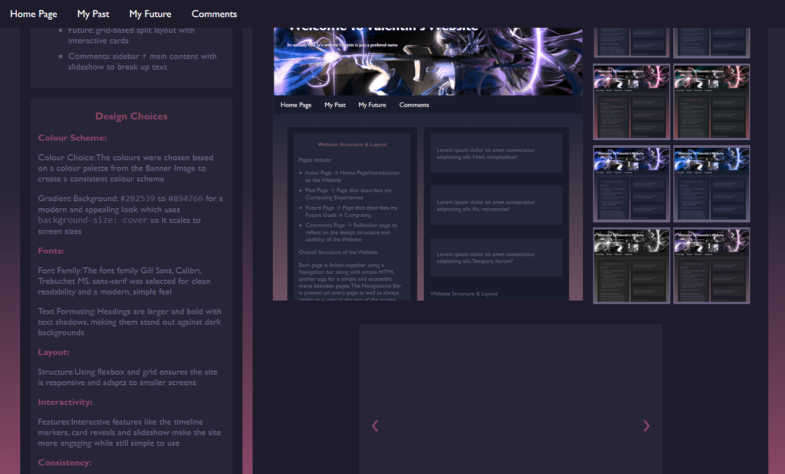

Graphic Design Discussion
CSS Structure
All Page
| Selector | Type | Effect |
|---|---|---|
| body | Element | Applies gradient background and sets global font |
| .navbar, .navbar ul, .navbar a | Class | Creates sticky top navigation bar with hover/active states |
| @media only screen and (max-width: 800px) | Media Query | Adjusts layouts (e.g., stacks ".mainboxes" vertically) for small screens |
Index Page
| Selector | Type | Effect |
|---|---|---|
| .topbannercontainer | Class | Positions banner image and overlay text |
| .mainboxes, .sideintrobox, .mainintrobox | Class | Flexbox layout for introduction boxes; responsive fallback at smaller widths |
Past Page
| Selector | Type | Effect |
|---|---|---|
| .Pastbody | Class | Creates grid with sidebar and timeline section |
| .Timeline, .TimelineCircle, .Timelinecontainer | Class | Vertical timeline with alternating left/right entries and circle markers |
Future Page
| Selector | Type | Effect |
|---|---|---|
| .spiltLayout | Class | Grid layout dividing page into two main sections |
| .FutureCardsSpilt, .Spilt3Grid | Class | CSS grid layout for future goals cards and 3-column split |
| #ClickCard1:checked + .FutureCards p | ID + Pseudo-class | Reveals hidden text when card is clicked (checkbox hack) |
Comments Page
| Selector | Type | Effect |
|---|---|---|
| .CommentPageContainer | Class | Flexbox layout splitting sidebar and main content |
| .CommentSideBar | Class | Sticky sidebar with quick links |
| .Slideshow, .slide, #Slide1:checked ~ .s1 | Class + ID + Pseudo-class | Interactive slideshow controlled by hidden radio buttons |
Graphic Design Discussion
Index Page (Homepage)
Design Overview: The homepage uses a flexbox layout for .mainboxes,
allowing dynamic resizing of side and main introduction boxes. The gradient background creates
depth and dark backgrounds with soft text colors ensure high contrast without straining the eyes.
Responsive design stacks boxes vertically on smaller screens.
Visual Hierarchy: The larger main intro box captures primary attention, while the side intro acts as supplementary information. Consistent typography enhances cohesion.
User Experience: Padding and margins provide breathing space. The design supports accessibility by maintaining readable contrast.
Top Banner (Across Pages)
Design Overview: Banner images cover the container with
object-fit: cover. Semi-transparent hover overlays improve text visibility without
hiding images.
Visual Hierarchy: Text shadows and contrasting colors make headings and paragraphs stand out. Hover effects add interactivity.
User Experience: Absolute positioning ensures proper overlay. Text remains readable over images.
Past Page (Timeline / Archive)
Design Overview: Timeline uses flexbox and pseudo-elements for the central vertical line. Alternating left/right placement and timeline circles add visual clarity. Content cards maintain consistent padding, background and typography.
Visual Hierarchy: Alternating placement guides the eye chronologically. Highlighted text draws attention to important events.
User Experience: Media queries adjust for mobile. Circles and lines visually guide users down the timeline.
Future Page (Split Layout / Cards)
Design Overview: Split layout balances text and images. Click-to-expand cards reveal more content. Grid layouts distribute cards adaptively.
Visual Hierarchy: Headings and color contrast differentiate sections. Transitions emphasize interactive elements.
User Experience: Fixed popups allow detail exploration. Responsive stacking ensures mobile usability.
Comments Page
Design Overview: Flexbox layout with sticky sidebar allows navigation between sections. Main content maintains consistent dark background and readable text. Tables are structured for clarity.
Visual Hierarchy: Sidebar highlights the active section. Section headings and colored text indicate content importance.
User Experience: Sticky sidebar improves navigation. Layout adjusts for mobile screens.
Slideshow Component
Design Overview: Flexbox-based slides transition horizontally. Slide content uses padding and flex alignment for readability.
Visual Hierarchy: Slide buttons are positioned for clarity. Width-based transforms enable smooth transitions.
User Experience: Slides allow content exploration without page reloads. Overflow handling accommodates longer text.
Overall Design Principles
- Consistency: Uniform colors, fonts, and spacing create a cohesive identity.
- Responsive Design:Layouts adapt to mobile devices.
- Accessibility & Readability: High contrast, legible fonts, and spacing improve usability.
- Interactive Feedback: Hover effects, clickable cards, and slides provide cue for engagement.
- Visual Hierarchy: Headings, contrast, and layout positioning guide the user's focus.
Use of <alt> Tags and Accessibility
The website has been designed with accessibility in mind. All images across every
page include <alt> attributes, which provide descriptive text conveying the
content or purpose of the image. This ensures users who rely on screen readers or have
images disabled can still understand the site content.
Page-specific accessibility:
- index.html: Banner images in
.topbannercontaineruse descriptive<alt>text. While Profile images in.sideprofilepicalso include<alt>so the page is informative even without visuals. Navigation uses semantic<nav>and anchor tags for keyboard accessibility. - past.html: Timeline elements (e.g.,
.TimelineCircle) include descriptive<alt>text where appropriate. Text contrast and font choices (#6b6380on dark backgrounds,Gill Sans) improve readability for visually impaired users. - future.html: Split layout images (
.leftSpilt img) include descriptive<alt>text. Interactive cards (.FutureCards) remain keyboard-accessible via labels and checkboxes. Colour contrast is high (#894766headings on#1D1B2Cbackground) for visibility. - comments.html: Sidebar images in
.CommentSideContainer imginclude<alt>text. Navigation links use:targetand.activestates for visual feedback and tables and headings are semantic for screen readers.
Font sizes, spacing, and contrast have been chosen to maximize readability. All interactive elements respond to hover and focus states, making the site usable for both mouse and keyboard users.
Website Structure & Layout
The website was made alongside the Pilestone Colour Blind Experts colour blindness simulator to ensure all pages are clear to anyone with visual deficiencies, while providing individuals with different types of colour vision deficiencies a visually appealing website no matter the colour vision deficiency.
Pilestone Colour Blind Compare View
Select a thumbnail to display it in the larger area. Use keyboard (Tab to focus a thumbnail and Enter/Space to select).

Planned Index Page Diagram

Final Index Page

Planned Past Page Diagram

Final Past Page

Planned Future Page Diagram

Final Future Page

Planned Comments Page Diagram First Half

Planned Comments Page Diagram Second Half

Final Comments Page First Half

Final Comments Page Second Half